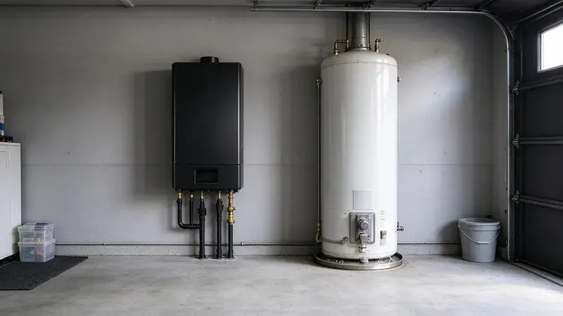
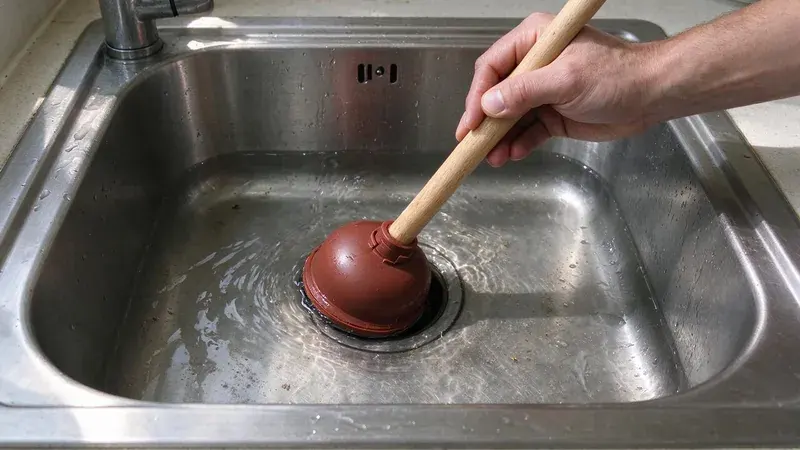
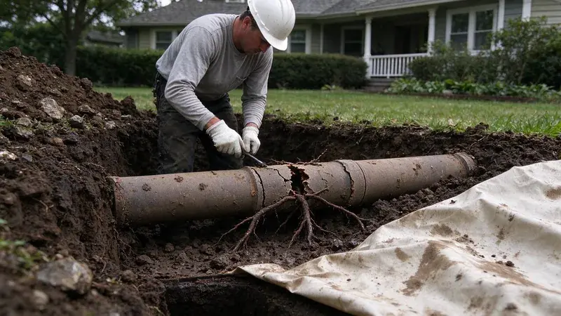
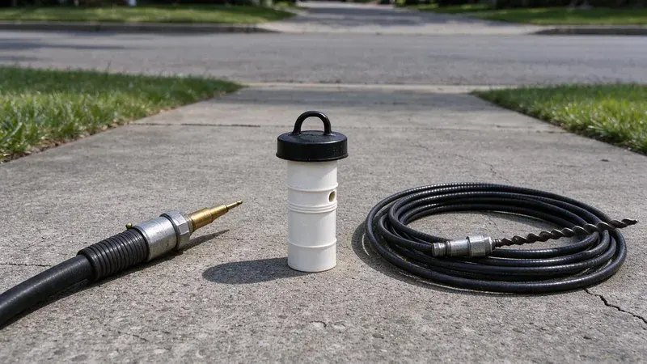

Plumbing Tips & Updates From JBK Plumbing
 15Oct, 2026
15Oct, 2026Slab Leak Warning Signs Every Oklahoma Homeowner Should Know
Plenty of Oklahoma houses sit on a concrete slab with the water lines poured in below. Here is how to spot a leak before it spreads.
 6Oct, 2026
6Oct, 2026How to Protect Your Pipes Before the Next Oklahoma Freeze
A burst line in a wall can dump hundreds of gallons overnight. Here is how to stop a Oklahoma home from freezing up.
 27Sep, 2026
27Sep, 2026Hard Water in Oklahoma: When a Water Softener Pays for Itself
Scale costs money in ways most people never add up. Here is when a softener is worth buying.

18Sep, 2026Tankless vs. Tank Water Heaters: What Works Best in Oklahoma
Groundwater temperature, garage conditions and scale change the tankless versus tank decision. Here is how to think it through for a Oklahoma home.

9Sep, 2026Kitchen Sink Backups: Causes, Prevention and Quick Solutions
Nothing stalls a kitchen like a sink full of standing water. Here is why it happens and what to try before you call.

31Aug, 2026Underground Pipe Damage: Common Causes and Modern Repair Solutions
A broken pipe underground no longer means a trench across the yard. Here is what causes the damage and how it gets fixed.

22Aug, 2026Hydro Jetting vs. Snaking: Which Drain Cleaning Method Do You Need?
A snake opens a clog while a jetter cleans the whole pipe wall. Here is how to tell which job you have.
 13Aug, 2026
13Aug, 2026Why a Sewer Camera Inspection Belongs on Every Oklahoma Home Inspection
Most home inspections never look past the visible drains. Here is why a sewer camera should be part of it in Oklahoma.
Have a plumbing question we did not cover?
Our team is happy to talk it through and give you a straight answer.